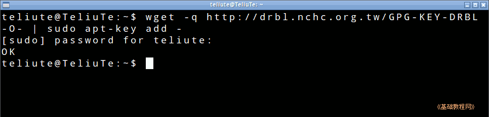
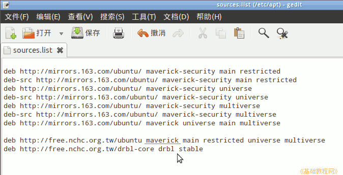
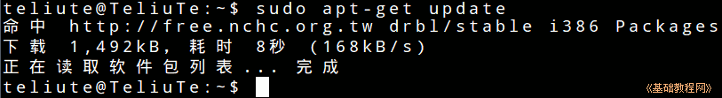
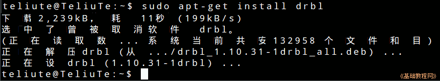

DRBL 操作指南
作者：TeliuTe 来源：基础教程网
一、安装 DRBL 返回目录 下一课DRBL 是一个无盘工作站系统，可以方便地引导和管理无盘计算机；
1、安装 DRBL
1）打开终端输入命令 wget -q http://drbl.nchc.org.tw/GPG-KEY-DRBL -O- | sudo apt-key add -
添加 DRBL 网站公钥，用于下载相关软件，按回车键后输入自己的密码，提示 OK 成功；

2）接着输入命令 sudo gedit /etc/apt/sources.list 打开文本编辑器窗口，在最后添加下面的源，
注意 maverick 要改成跟自己的 Ubuntu 系统一致的名称；

3）再接着输入命令 sudo apt-get update 更新源，也提示完成；

4）再接着输入命令 sudo apt-get install drbl 安装 DRBL 软件包；

5）提示完成后，DRBL 就安装到系统中，下一步将要进行配置，相关 DRBL 的帮助文档：http://drbl.nchc.org.tw/one4all/desktop/
完全卸载drbl的方法是输入命令：sudo /opt/drbl/sbin/drblsrv -u
本节学习了安装 DRBL的基础知识，如果你成功地完成了练习，请继续学习下一课内容；
本教程由86团学校TeliuTe制作|著作权所有
基础教程网：http://teliute.org/
美丽的校园……
转载和引用本站内容，请保留作者和本站链接。